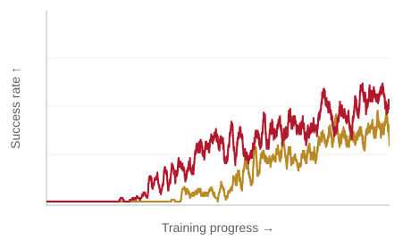
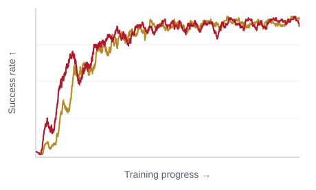
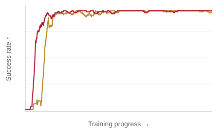
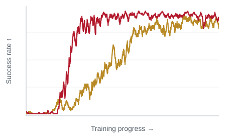

Learn robot rewards from videos. Focus on task progress.
DiTaR turns action-free videos into dense rewards for robot reinforcement learning. It separates task-relevant dynamics from visual variation, so rewards stay stable under lighting and camera changes, yet respond when the execution is disrupted.
The idea in 30 seconds
01 / The reward we want
What makes a good video reward?
The same task should receive a consistent reward across visual conditions. A change in the execution should produce a change in reward.
01 · Lighting
Robust to lighting conditions
Same button press, different illumination. DiTaR’s reward changes much less than the compared baselines.
MetaWorld button press under clean, mild and heavy lighting.
Reward shiftVIPER 3.11Diffusion Reward 0.49DiTaR 0.15lower is better
02 · Camera
Robust to camera changes
A new viewpoint, camera rotation or zoom changes the image while preserving the task. DiTaR keeps a more consistent reward trajectory in these examples.
1 / 1
ManiSkill Push-T: the same demonstration from left and right cameras.
Δ normalized MAEVIPER 0.228Diffusion Reward 0.259ReWiND 0.229DiTaR 0.082lower is better
03 · Temporal structure
Detect disruptions in task progress
Reverse, repeat or reorder parts of a demonstration: individual frames remain plausible, but the execution changes. DiTaR responds more strongly to these disruptions.
1 / 2
Real-world demonstration with synthetic backward drift: task progress is reversed.
Reward shiftVIPER 0.10Diffusion Reward 0.20DiTaR 0.66larger response to disruption
Selected episodes illustrate reward behavior. Lower shift is desirable for visual changes; a larger response is desirable for temporal disruptions. These per-episode values are not aggregate benchmark scores.
02 / The design
Learn what matters. Reward how it changes.
DiTaR first separates task-relevant information from visual variation, then learns a dynamics model in that space to produce dense rewards.
Start with video
A frozen Wan encoder
A short clip becomes source and target video latents through a frozen Wan VAE. These latents are the input to our two-stage disentangling design.
Pretraining uses videos paired with task instructions. No action labels or privileged simulator states are needed.
The key design
Two stages to separate appearance from the task
1
Let language explain the task
The decoder receives the task instruction. A capacity-limited latent is encouraged to capture the remaining visual variation, such as lighting and background.
Learn a task-irrelevant latent
2
Recover the task from video
Freeze the first encoder and decoder, then remove the decoder’s language input. A new encoder learns a task-relevant latent that takes language’s place.
Learn a task-relevant latent
From representation to reward
Reward progress in the task-relevant space
A rectified-flow model learns task-relevant dynamics, conditioned on recent visual history and the instruction. Its prediction residual measures how well an observed transition fits those dynamics.
Prediction residualetMismatch with learned dynamics
→
Compatibilityφt = exp(−et)Higher means a closer fit
→
Dense rewardrt = φt − φt−ΔtReward improvement over time
Reward ablation
Why take the temporal difference?
Compare the TD reward with using the absolute compatibility score directly as reward.
TD (DiTaR)φt − φt−ΔtNon-TDφt
MetaWorldCoffee Pull

MetaWorldDial Turn

MetaWorldFaucet Open

ManiSkillPush Cube

TD generally improves learning efficiency. Qualitative view of the paper’s ablation curves; numerical ticks are omitted.
The temporal difference supplies a directional signal for policy learning, used as dense shaping alongside the sparse env reward.
03 / Policy learning
Better rewards, better robot policies
From simulation to real-world offline RL, task-relevant rewards improve policy success.
94.3%MetaWorld-v3 success12 tasks · best baseline 65.2%
87.5%ManiSkill success4 tasks · best baseline 74.6%
83.3%Real-world offline RLFranka arm · best baseline 43.3%